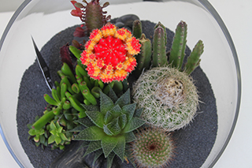

In Wynwood, art is everywhere. Almost every centimeter of the neighborhood's walls is covered with colorful murals of all kinds, but there are more than just paintings. Restaurants with perfectly executed dishes, prepared with fresh local products at affordable prices abound. Cinemas, coffee shops, food trucks, public spaces and regular shops are also part of the hot spots with a distinctive blend of edge and charm.
If you are an art lover plaining on visiting Wynwood one day is not enough because there are plenty of interesting places to go! These are just a few ...
PANTHER COFFEE
Panther Coffee is a Miami-based specialty coffee roaster and retailer that specialize in the small-batch roasting of coffee and the preparation of coffee beverages. It is also known as the “Hipster’s Heaven” and is one of the most popular cafes in the city; not only for the quality of its coffee but also for its location.
JOEY'S ITALIAN CAFE
Joey’s focuses on an authentic Northern Italian and Mediterranean cuisine with local and sustainable ingredients. Like the food, the restaurant’s décor is unassuming yet elegant. The “Pappardelle Gratinate” is a must.
WYNWOOD WALLS
The Wynwood Walls is a creative outdoor street art museum, free to the public, that features over 40 large scale works of some of the genre’s must famous artists.

PLANT THE FUTURE
Plant the Future is your go-to for whimsical terrariums, desert garden, orchid arrangements, and a wide variety of air plants.
O CINEMA
O Cinema is a cutting-edge, non-profit, independent cinema that showcase first-run independent, foreign and family films. Its mission is to provide intriguing, entertaining and superior quality films that audiences will otherwise not see in Miami-Dade County.